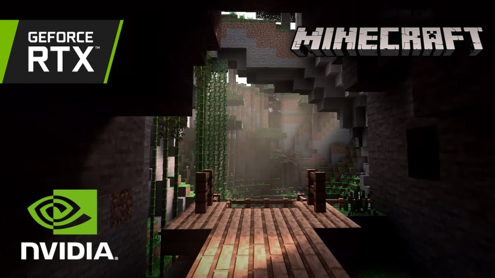

Utilizing the power of GPU, we will have the capability of capturing the game renderings in real time, and generating graphic data feeding into AI models and output actions. The AI will be playing Minecraft, collecting resources, running away from threats, and with lots other potential actions. This will automate the process of collecting resources in Minecraft and ease the game play commitment.
In Minecraft, especially in online server survival mode, resources are everything. However, sometimes people would like to be profited off hosting the server, therefore making the in game currency and resources limited and hard to access. Spending hours and days grinding in minecraft for resource and in game currency isn’t an option for busy Berkeley student like us, therefore we would like to create an AI Model such is able to detect in game objects, such as resources like woods, ore, etc; as well as enemies such as zombies, and spiders. We will utilize DirectX or MSS to capture the game in real time, and feed the image data to a model which we will be trained for recognizing the in game objects, and finally automate the resources collection process with a danger avoidance system in order to maximize efficiency. The challenge will be first, capture the in game renderings and data with acceptable frame rates(depending on the system setup and resolutions). Second, training the model for too many objects could be problematic, so accuracy and precision will be determining factors of how successful the model is going to be. We are going to implement the solution with a couple different components. Including data collection, training, retrain and tweaking; and lastly, output logics.
We are trying to build a complete system with real time image collection as input, transforming and mutating the input for better recognition with different filters, and lastly outputting logic based on the decision made by the neuronetwork. We can accomplish our goals because we have the tools we need. Tensorflow and keras is a good start, with the software taken care of, we have Nvidia RTX 2070 Super for computing. Not only it supports real time ray tracing (not like we will be using it), but also enough computational power to power and train our AI model, as well as collecting images for our input. The result we are aiming for is a complete automation process of resource collection and danger avoidance, with minimal human intervention and edge cases taken care of.
We can show off our demo by running the minecraft with our AI implementation, with minimal human intervention. If everything goes smoothly, the AI should be expected to automatically surf the map and look for resources, collect resources, and avoid danger. We can show off the demo using video recordings or other means if necessary(remote control). However, since we are building this on top of our machines, Therefore, it might not be compatible with other machines with different system settings or game settings, because minor changes could throw things off easily. We could be implementing an general solution which is suitable for most of the machines, but that will be too much work and too many things to consider, and it is not the main focus of what we are trying to solve.
We will be keeping track of the speed of data collection as it is the main input for our computer vision. The speed of data collection will be measured in FPS (Frame Per Second). Since the higher the frame rate, the more up to date information we can get and this is crucial for the responsiveness of our program. Secondly, we will be measuring object detection accuracy and confidence level in order to ensure our model is acceptable. If the accuracy and precision of our model is too low, we will have to retrain it with different training data, or even different neuronet instructure. Lastly, we can do a compare and contrast of the efficiency of our AI model is compared for limited trial of human efficiency. How much better does AI perform compared to real players, or how much worse.
April 14 : Project Start
First Week: Designing Neuronet, Data Collection, Categorize datas.
Second Week: Training Neuronet, Testing accuracy and confidence, Retrain and tweak.
April 28 : Milestone Due
Third Week:Implementing Logic outputs, Bug fixes, edge cases.
May 7 : Final Presentation
Fourth Week: More bug fixes, optimizations. Possibly multithread? If I have time.
May 12 : Final Deliverable